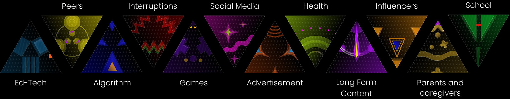
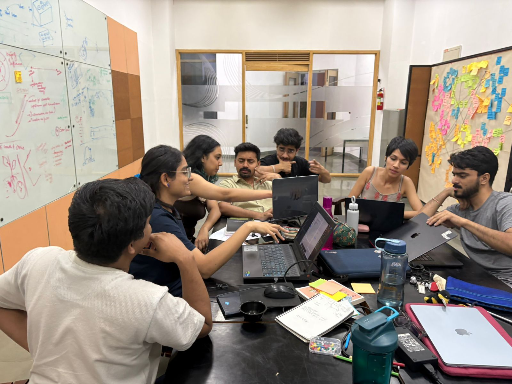
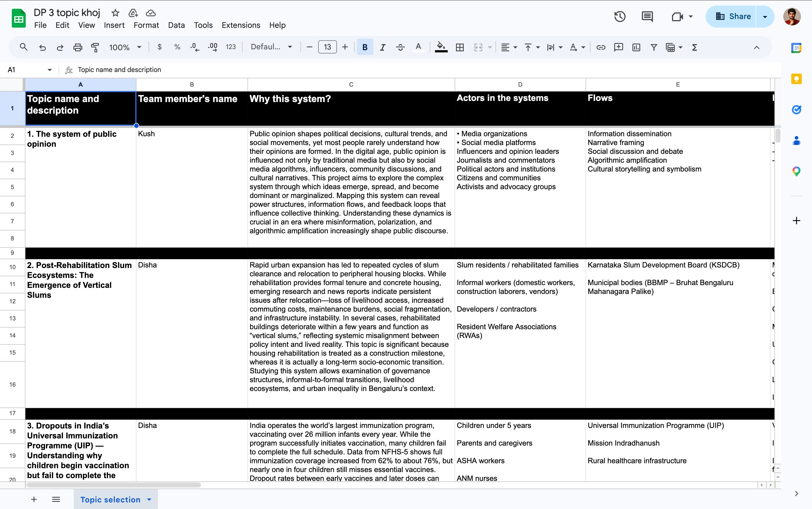
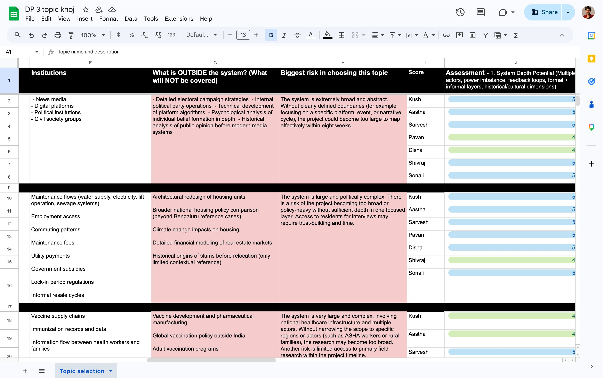
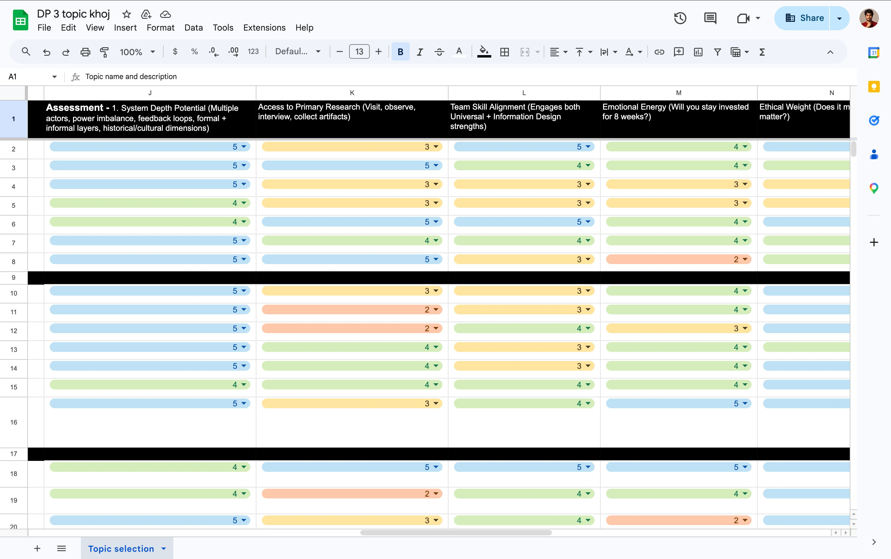
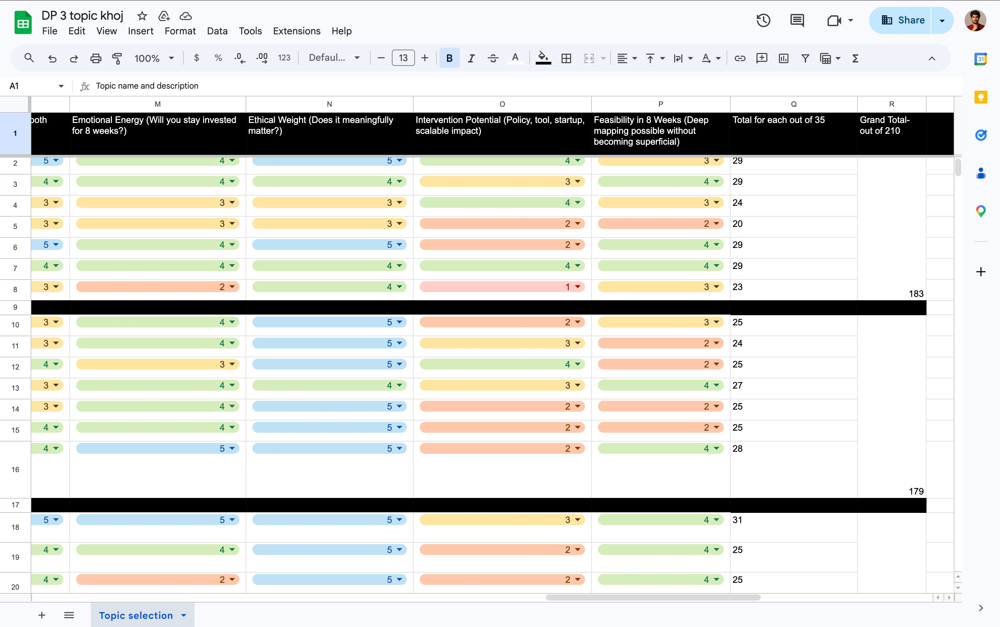
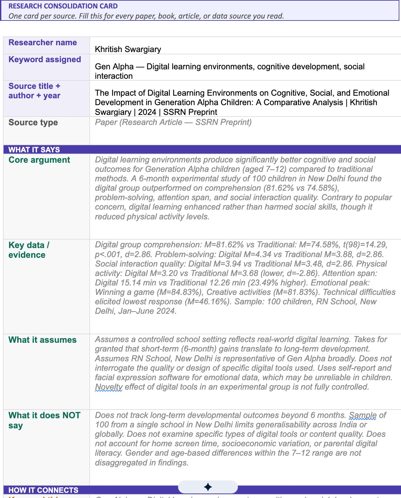

Exploring the emergence of identity of Gen Alpha children in the presence of digital visual media — a systems gigamap.
About the project

This project maps what happens when children in India grow up inside a digital ecosystem that nobody designed for child development — and nobody can easily turn off. The gigamap traces the causal loops that form identity before the child can choose their own.
Novel Design Methodologies
Before the gigamap could exist, the team needed a way to choose the right system — and then read every source in the same language. These two methodologies were designed for that.
A structured matrix for evaluating and scoring potential research systems before committing to one. Every candidate topic was assessed across seven criteria by each team member independently, then aggregated. The score reveals not just what is interesting — but what is mappable, accessible, and genuinely urgent within the project's constraints.
Why it matters
Prevents the team from choosing a topic based on enthusiasm alone. Forces explicit reckoning with feasibility, access, and ethical weight before any research begins.
One card per source. A fixed-format reading instrument that every team member completes for every paper, book, article, or data source they read. The card forces four questions: what it says, what it assumes, how it connects to the system map, and — critically — your own reading of its significance.
Why it matters
Transforms individual reading into collective intelligence. When all seven students use the same card format, their findings become comparable, combinable, and directly mappable to the gigamap's nodes and relationships.
Methodology 01 — Topic Khoj
Each student scored every candidate topic independently across seven dimensions — out of 5 each, 35 per person, 210 total across the full team. The scoring was not a vote. It was a structured argument.

Topics · Actors · Flows
Institutions · Risks
Scoring criteria
Final scores · Grand totalsMethodology 02 — Research Consolidation Card
Designed so that seven students reading across seven different keyword domains could produce findings in the same language — directly connectable to the gigamap's nodes, actors, and loops.

Section 1 — Source metadata
Student name, keyword assigned, source title + author + year, source type. Ensures every card is traceable and attributable within the team.
Section 2 — What it says
Core argument in the student's own words. Key data and evidence with page references. What the source assumes. What it explicitly does NOT say — the map of what is missing.
Section 3 — How it connects
Which keyword does this map to? Which actors does it identify? What forces or tensions does it name? What other keywords does it connect to? This section bridges individual reading to collective mapping.
Section 4 — For the gigamap
One node this source suggests. One relationship it reveals. India relevance — does it transfer or does it need re-testing in the Indian context.
Section 5 — Your own reading
The student's personal interpretation — what they think is most significant, most understudied, most useful for the map. The section that cannot be automated. Where individual judgment enters the collective process.